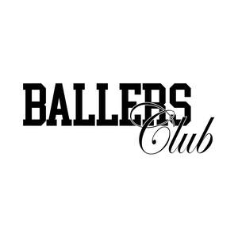
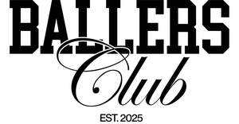

Trade Mark Journal No.2026/010 6 March 2026
UK00004317037 29 December 2025 (9,18,24,25,35,42)
Mark 1

Mark 2
Ballers Club
Mark 3

- Class 9
- Fashion sunglasses; Fashion eyeglasses; Fashion spectacles.
- Class 18
- Fashion handbags; Bags for sports clothing; Holdalls for sports clothing; Backpacks.
- Class 24
- Textiles for making articles of clothing; Textile piece goods for making-up into clothing; Textile piece goods for clothing; Textile fabrics for making into clothing; Textile piece goods for making into clothing; Fabric for manufacturing men's outerwear; Apparel fabrics; Textile fabrics for use in the manufacture of sportswear; Jersey fabrics for clothing.
- Class 25
- Clothes; Clothing; Denims [clothing]; Jackets [clothing]; Shorts [clothing]; Clothes for sports; Jackets (Stuff -) [clothing]; Stuff jackets [clothing]; Clothes for sport; Linen clothing; Bottoms [clothing]; Gloves [clothing]; Gloves as clothing; Jerseys [clothing]; Clothing for leisure wear; Hoods [clothing]; Woolen clothing; Ready-to-wear clothing; Tops [clothing]; Knitwear [clothing]; Ready-made clothing; Embroidered clothing; Casual clothing; Sports wear; Clothing for sports; Sports clothing; Sports jerseys and breeches for sports; Sports shoes; Sports garments; Sports shirts; Sports footwear; Footwear for sports; Sports pants; Sports jackets; Sports clothing [other than golf gloves]; Leisure wear; Sports jerseys; Headgear for wear; Sport shirts; Casual wear; Footwear for sport; Sports caps; Sports caps and hats; Formal wear; Sport coats; Evening wear; Rain wear; Children's wear; Head wear; Sports shirts with short sleeves; Athletic uniforms; Athletics footwear; Athletics shoes; Athletic footwear; Athletic shoes; Fashion hats; Menswear; Casual footwear; Sportswear; Parts of clothing, footwear and headgear; Footwear; Leather clothing; Clothing of leather; Leather (Clothing of -); Leisure clothing; Articles of sports clothing; Knitwear; Smart clothing; Articles of clothing; Footwear for women; Cashmere clothing; Athletic clothing; Jackets being sports clothing; Men's clothing; Clothing of imitations of leather; Leather (Clothing of imitations of -); Leisure footwear; Hoodies; Sweatshirts; Hooded sweatshirts; T-shirts; Hooded sweat shirts; Shirts; Short-sleeved T-shirts; Turtleneck shirts; Hooded pullovers; Long-sleeved shirts; Beanies; Short-sleeve shirts; Camouflage shirts; Short-sleeved shirts; Tee-shirts; Fleece jackets; Corduroy shirts; Tracksuits; V-neck sweaters; Shirts for suits; Sleeved jackets; Collared shirts; Sleeveless jackets; Sweat shirts; Sweaters; Beanie hats; Sweatpants; Jackets; Knit shirts; Fleece pullovers; Open-necked shirts; Men's and women's jackets, coats, trousers, vests; Mock turtleneck shirts; Cardigans; Turtleneck pullovers; Denim jackets; Balaclavas; Turtleneck sweaters; Tank-tops; Camouflage jackets; Turtlenecks; Casual shirts; Knit jackets; Pullovers; Dress shirts; Sleeveless pullovers; Parkas; Bandanas; Moisture-wicking sports shirts; Anoraks [parkas]; Fleece shorts; Sweat jackets; Jumpers [sweaters]; Quilted jackets [clothing]; Printed t-shirts; Sleeveless jerseys; Jumpers [pullovers]; Overshirts; Hooded tops; Fleece vests; Polar fleece jackets; Polo shirts; Trenchcoats; Gilets; Tracksuit tops; Scarves; Polo sweaters; Casual jackets; Woven shirts; Sweatsuits; Fur coats and jackets; Fleece tops; Overcoats; Hats; Tracksuit bottoms; Windproof jackets; Pique shirts; Bomber jackets; Jeans; Collars [clothing]; Under shirts; Jerseys; Wind-resistant jackets; Padded jackets; Jogging bottoms [clothing]; Jogging pants; Shoes for leisurewear; Trousers; Trousers shorts; Trousers for sweating; Gym shorts; Corduroy trousers; Lounge pants; Jogging outfits; Jogging bottoms; Warm-up pants; Casual trousers; Sweatshorts; Camouflage pants; Gymwear; Jogging suits; Leisurewear; Sneakers; Pants; Leather pants; Tennis shirts; Jogging shoes; Waterproof trousers; Jogging tops; Boxer shorts; Boxing shorts; Sweat pants; Windcheaters; Jogging sets [clothing]; Warm-up jackets; Salopettes; Suede jackets; Turtleneck tops; Vest tops; Men's socks; Baselayer bottoms; Casualwear; Outerwear; Formalwear; Beachwear; Swimwear; Neckwear; Footwear for men; Denim jeans; Silk clothing; Knitted clothing; Denim pants; Woven clothing; Coats of denim; Denim coats; Sneakers [footwear]; Blazers; Ladies wear; Shoes for casual wear; Infant wear; Footwear for men and women; Shoes; Men's sandals; Waterproof shoes; Formal evening wear; Slip-on shoes; Women's shoes; Furs [clothing]; Garments for protecting clothing; Layettes [clothing]; Clothing layettes; Headbands [clothing]; Headbands for clothing; Aprons [clothing]; Kerchiefs [clothing]; Capes (clothing); Veils [clothing]; Windproof clothing; Corsets [clothing, foundation garments]; Wristbands [clothing]; Belts [clothing]; Belts for clothing; Bandeaux [clothing]; Rainproof clothing; Waterproof clothing; Visors [clothing]; Playsuits [clothing]; Trunks being clothing; Infant clothing; Drawers [clothing]; Drawers as clothing; Ties [clothing]; Clothing for children; Muffs [clothing]; Bodies [clothing]; Clothing for babies; Clothing for infants; Clothing for cycling; Weatherproof clothing; Fabric belts [clothing]; Pockets for clothing; Water-resistant clothing; Triathlon clothing; Clothing for skiing; Thermal clothing; Beach clothing; Chaps (clothing); Mitts [clothing]; Dance clothing.
- Class 35
- Retail services in relation to fashion accessories; Promoting the sale of fashion goods through promotional articles in magazines; Retail services connected with the sale of clothing and clothing accessories; Online retail store services in relation to clothing; Online retail store services relating to clothing.
- Class 42
- Fashion design; Design of clothing; Design of clothing, footwear and headgear; Design of clothing accessories; Designing of clothing; Design of fashion accessories.
Haseeb Ahmad Mujahid